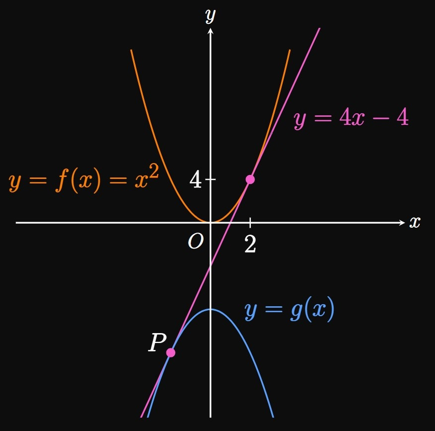
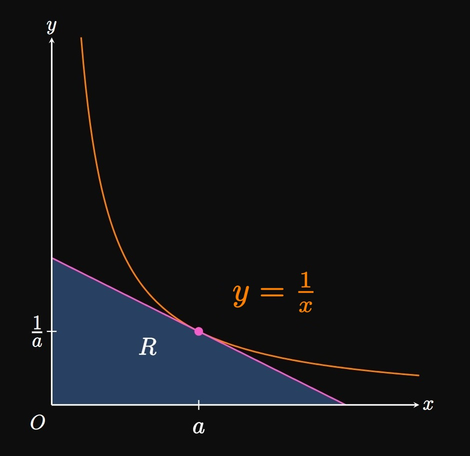

Let \(f(x) = x^2\) and \(g(x) = -x^2 - C.\)
Find the value of \(C\) such that the line tangent to \(f\)
at \(x = 2\) is also tangent to \(g.\)
SOLUTION

The word tangent means that the line intersects \(g(x)\)
at \(a\) with slope \(g'(a).\)
We anticipate that the tangent line to \(f\) at \(x = 2\) is also tangent to \(g\) in the third quadrant.
So we are considering only one tangent line.
We see \(f(2) = 4\) and \(f'(2) = 4,\)
so an equation of this tangent line is
\[y - 4 = 4(x - 2) \or y = 4x - 4 \pd\]
This line has slope \(4\) and must be tangent to \(g(x) = -x^2 - C,\)
whose derivative is \(g'(x) = -2x.\)
Equating slopes shows
\[-2x = 4 \implies x = -2 \pd\]
Thus, the line \(y = 4x - 4\) is tangent to \(f\) at \(x = 2\)
and tangent to \(g\) at \(x = -2.\)
The word tangent means that this line also intersects \(g(x)\) at \(x = -2.\)
When \(x = -2,\) the line's \(y\)-value is
\[4(-2) - 4 = -12 \cma\]
so \(g(-2) = -12.\)
Thus, we see
\[g(-2) = -(-2)^2 - C = -12 \implies \boxed{C = 8}\]
EXERCISE 2
At some \(x,\) suppose that the slope of the tangent to \(f(x)\) equals the
slope of the tangent to \(1/f(x).\)
What is this slope?
SOLUTION
The derivative of the reciprocal function is
\[-\frac{f'(x)}{[f(x)]^2} \pd\]
If the slope to \(f\) equals the slope to \(1/f,\)
then their derivatives are equal:
\[f'(x) = -\frac{f'(x)}{[f(x)]^2} \pd\]
The only solution to this equation is \(f'(x) = 0.\)
If we disregard this solution and instead cancel the \(f'(x)\)'s on both sides,
then we get
\[
\ba
1 &= -\frac{1}{[f(x)]^2} \nl
[f(x)]^2 &= -1 \cma
\ea
\]
which has no real solutions.
Hence, the only possible value of the slope is \(\boxed{0}.\)
EXERCISE 3
If \(f\) is differentiable at \(a,\) then calculate the following limit in terms of \(f'(a) \col\)
\[\lim_{x \to a} \frac{f(x) - f(a)}{\sqrt x - \sqrt a} \pd\]
SOLUTION
Observe that the limit definition of \(f'(a)\) is
\[f'(a) = \lim_{x \to a} \frac{f(x) - f(a)}{x - a} \pd\]
Let's multiply the numerator and denominator of the given limit by \((\sqrt x + \sqrt a);\)
doing so shows
\[
\ba
\lim_{x \to a} \frac{f(x) - f(a)}{\sqrt x - \sqrt a}
&= \lim_{x \to a} \frac{f(x) - f(a)}{\sqrt x - \sqrt a} \frac{\par{\sqrt x + \sqrt a}}{\par{\sqrt x + \sqrt a}} \nl
&= \lim_{x \to a} \frac{f(x) - f(a)}{x - a} \par{\sqrt x + \sqrt a} \nl
&= f'(a) \lim_{x \to a} \par{\sqrt x + \sqrt a} \nl
&= \boxed{2 f'(a) \sqrt a}
\ea
\]
EXERCISE 4
Let \(R\) be the region in the first quadrant bounded between the coordinate axes and the
line tangent to the curve \(y = 1/x\) at any point \((a, 1/a).\)
Does the area of \(R\) depend on \(a \ques\)
SOLUTION

Region \(R\) is a triangle whose hypotenuse is the tangent line.
The derivative of \(1/x\) is, by the Power Rule,
\[-x^{-2} = -\frac{1}{x^2} \pd\]
Thus, the slope to the curve \(1/x\) at \(x = a\) is \(-1/a^2.\)
The point of tangency is \((a, 1/a),\)
so an equation of the tangent line is
\[y - \frac{1}{a} = -\frac{1}{a^2}(x - a) \or y = -\frac{x}{a^2} + \frac{2}{a} \pd\]
To find the triangle's base \(b,\) we set \(y = 0 \col\)
\[0 = -\frac{b}{a^2} + \frac{2}{a} \implies b = 2a \pd\]
The triangle's height \(h\) is found by letting \(x = 0 \col\)
\[h = -\frac{0}{a^2} + \frac{2}{a} \implies h = \frac{2}{a} \pd\]
Hence, the triangle's area is
\[\tfrac{1}{2} bh = \tfrac{1}{2}(2a) \par{\tfrac{2}{a}} = \boxed{2}\]
Surprisingly, the area does not depend on \(a \exclam\)
EXERCISE 5
Find the value of
\[\lim_{x \to \pi/2} \frac{e^{\cos x} - 1}{x - \dfrac{\strut \pi}{2}} \pd\]
SOLUTION
Note that \(e^{\cos(\pi/2)}\) \(= e^0\) \(= 1.\)
So the limit is
\[\lim_{x \to \pi/2} \frac{e^{\cos x} - e^{\cos(\pi/2)}}{x - \dfrac{\strut \pi}{2}} \pd\]
This is the limit definition of the derivative of \(e^{\cos x}\) at \(x = \pi/2.\)
Hence, the limit equals
\[
\ba
\deriv{}{x} \par{e^{\cos x}} \intEval_{x = \pi/2} &= \par{- e^{\cos x} \sin x} \intEval_{x = \pi/2} \nl
&= \boxed{-1}
\ea
\]
EXERCISE 6
For what value of \(C\) does the equation \(x^2 = C + \ln x\)
have only one solution?
SOLUTION
For the curves of \(f(x) = x^2\) and \(g(x) = C + \ln x\)
to intersect once, they must be tangent
at some point \(x = a.\)
Recall that the word tangent means \(f(a) = g(a)\)
and \(f'(a) = g'(a).\)
Observe that \(f'(x) = 2x\) and \(g'(x) = 1/x.\)
Equating the derivatives at \(a\) shows
\[2a = \tfrac{1}{a} \implies a = \tfrac{1}{\sqrt 2} \pd\]
Now we substitute this value into the equation \(x^2 = C + \ln x,\)
seeing
\[
\ba
\par{\tfrac{1}{\sqrt 2}}^2 &= C + \ln \tfrac{1}{\sqrt 2} \nl
\implies C &= \boxed{\tfrac{1}{2} - \ln \tfrac{1}{\sqrt 2}}
\ea
\]
EXERCISE 7
Let \(k\) be a positive constant.
Line \(\ell\) is the tangent to the curve \(f(x) = e^{kx}\)
at \(x = a\)
and strikes the \(x\)-axis at \((c, 0).\)
Calculate \(\lim_{k \to \infty} c.\)
Show that \(\lim_{k \to 0^+} c = -\infty.\)
What does this result mean geometrically?
Using differentials, approximate the amount by which \(c\) changes
as \(k\) increases from \(2\) to \(2.1.\)
With \(a\) held constant,
the value of \(k\) increases at a constant rate of \(2\) units per minute.
When \(k = 4,\) how quickly is \(c\) changing with time?
SOLUTION
We have \(f'(x) = ke^{kx}.\)
So an equation of the line tangent to \(f\) at \((a, e^{ka})\) is
\[y - e^{ka} = k e^{ka} (x - a) \pd\]
This line has an \(x\)-intercept at \(x = c,\)
so substituting \((c, 0)\) gives
\[
\ba
0 - e^{ka} &= k e^{ka} (c - a) \nl
\implies c &= a - \frac{1}{k} \pd
\ea
\]
Then
\[
\ba
\lim_{k \to \infty} c
&= \lim_{k \to \infty} \par{a - \frac{1}{k}} \nl
&= \boxed a
\ea
\]
This result is logical: as \(k\) increases,
the curve \(f\) becomes steeper and so \(\ell\) becomes closer to the vertical line \(x = a.\)
As \(k \to 0^+,\) \(1/k \to \infty.\)
Accordingly, as requested,
\[\underbrace{a - \frac{1}{k}}_{c} \to -\infty \as k \to 0^+ \pd\]
Geometrically, \(k \to 0^+\) means the curve \(f(x) = e^{kx}\)
becomes flatter,
so line \(\ell\) becomes more horizontal.
By making \(k\) arbitrarily close to \(0\) (with \(k \gt 0\)),
the \(x\)-intercept of line \(\ell\) continually shifts to the left, away from the \(y\)-axis.
Differentiating both sides of \(c = a - 1/k\) with respect to \(k,\)
we get
\[
\ba
\deriv{c}{k} &= \frac{1}{k^2} \nl
\implies \dd c &= \frac{1}{k^2} \di k \pd
\ea
\]
Taking \(k = 2,\) \(\Delta c \approx \dd c,\) and \(\di k = \Delta k\) \(= 0.1,\)
we have
\[\Delta c \approx \frac{1}{(2)^2} (0.1) = \boxed{\frac{1}{40}}\]
Differentiating both sides of \(c = a - 1/k\) with respect to time,
and noting that \(a\) is constant,
we get
\[
\deriv{c}{t} = \frac{1}{k^2} \deriv{k}{t} \pd
\]
We are given \(\textderiv{k}{t} = 2\) and \(k = 4,\)
which we substitute to get
\[
\ba
\deriv{c}{t} \intEval_{k = 4} = \frac{1}{4^2} (2) = \boxed{\frac{1}{8}}
\ea
\]
EXERCISE 8
Is there a value of \(x\) at which the tangent lines to the graphs of \(f(x) = \tfrac{1}{4} x^4 + 12x,\)
\(g(x) = x^3 + 2x^2,\) and \(h(x) = 2x^2 + 27x + 2\) are all parallel to each other?
If so, then find this value of \(x.\)
SOLUTION
The functions' derivatives are, respectively,
\[
\ba
f'(x) &= x^3 + 12 \cma \nl
g'(x) &= 3x^2 + 4x \cma \nl
h'(x) &= 4x + 27 \pd
\ea
\]
The tangents to all three graphs are parallel if and only if they have the same slope, namely,
\(f' = g' = h'.\)
There are three cases we need to satisfy: \(f' = g',\) \(f' = h',\) and \(g' = h'.\)
Equating \(f' = h',\) we see
\[
\ba
x^3 + 12 &= 4x + 27 \nl
x^3 - 4x - 15 &= 0 \pd
\ea
\]
Out of all the solutions from the first case—that is, \(x = -2,\) \(x = 2,\)
and \(x = 3\)—only \(x = 3\) solves this equation.
We solve \(g' = h',\) as follows:
\[
\ba
3x^2 + 4x &= 4x + 27 \nl
x^2 &= 9 \nl
\implies x &= -3 \cma x = 3 \pd
\ea
\]
Hence, the only solution to \(f' = g' = h'\) is \(\boxed{x = 3}.\)
EXERCISE 9
A circle of radius \(r\) is centered at point \(C\) on the \(y\)-axis and is inscribed in the triangle formed by the graph of \(y = \abs x\)
and the horizontal line \(\ell,\)
as shown by Figure 1.
In terms of \(r,\) calculate the area of \(\Delta OPQ.\)
SOLUTION
The problem becomes trivial if the identity of line \(\ell\) is known;
this is our objective.
First let's express the coordinates of point \(C(0, y_C)\) in terms of \(r.\)
Note that point \(R\) is a point of tangency,
so at \(R\) the graph \(y = \abs x\) and the circle share the same slope, \(1.\)
Accordingly, an equation of the normal line (see Section
2.2)
at \(R\) is
\[y - y_C = -\frac{1}{1} (x - 0) \or y = y_C - x \pd\]
The circle and \(y = \abs x\) also have the same \(y\)-coordinate at \(R,\)
so we see
\[y_C - x = x \implies x = \tfrac{1}{2} y_C \pd\]
Hence, the coordinates of \(R\) are \(\par{\tfrac{1}{2} y_C, \tfrac{1}{2} y_C}.\)
By the Distance Formula,
we have
\[
\ba
r &= \length{CR} \nl
&= \sqrt{\par{0 - \tfrac{1}{2} y_C}^2 + \par{y_C - \tfrac{1}{2} y_C}^2} \nl
&= \frac{y_C}{\sqrt 2} \pd
\ea
\]
It follows that \(y_C = r \sqrt 2.\)
Hence, the identity of line \(\ell\) is
\[
\ba
y &= y_C + r \nl
&= r \sqrt 2 + r \nl
&= r (1 + \sqrt 2) \pd
\ea
\]
Line \(\ell\) therefore intersects \(y = \abs x\) in the first quadrant at
\(Q(r(1 + \sqrt 2), r(1 + \sqrt 2))\)
and in the second quadrant at
\(P(-r(1 + \sqrt 2), r(1 + \sqrt 2)).\)
Therefore, \(\Delta OPQ\) has a width of \(2r(1 + \sqrt 2)\)
and a height of \(r(1 + \sqrt 2).\)
So its area is
\[
\ba
A &= \tfrac{1}{2} \parbr{2r(1 + \sqrt 2)} \parbr{r(1 + \sqrt 2)} \nl
&= r^2 (1 + \sqrt 2)^2 \nl
&= \boxed{r^2 \par{2 + 2 \sqrt 2 + 1}} \approx 5.828 r^2 \pd
\ea
\]
EXERCISE 10
The function \(f(x) = 1/x + \atan x\) is one-to-one for \(x \gt 0.\)
Show that
\[\lim_{x \to (\pi/2)^+} \par{\inv f}'(x) = -\infty \pd\]
SOLUTION
Observe that \(f(x) \to (\pi/2)^+\)
as \(x \to \infty.\)
Consequently, \(\inv f(x) \to \infty\) as \(x \to (\pi/2)^+.\)
We have
\[
\baf
&&f'(x) &= -\frac{1}{x^2} + \frac{1}{x^2 + 1} = -\frac{1}{x^4 + x^2} &\nl
\laWord{and} &&\lim_{x \to (\pi/2)^+} \par{\inv f}'(x) &= \lim_{x \to (\pi/2)^+} \frac{1}{f' \par{\inv f(x)}} \pd
\eaf
\]
To evaluate this limit, we substitute \(u = \inv f(x).\)
Then \(u \to \infty\) as \(x \to (\pi/2)^+,\)
so our limit becomes
\[
\ba
\lim_{u \to \infty} \frac{1}{f'(u)} &= \lim_{u \to \infty} \frac{1}{-\dfrac{1}{u^4 + u^2}} \nl
&= \lim_{u \to \infty} - \par{u^4 + u^2} \nl
&= -\infty \pd
\ea
\]